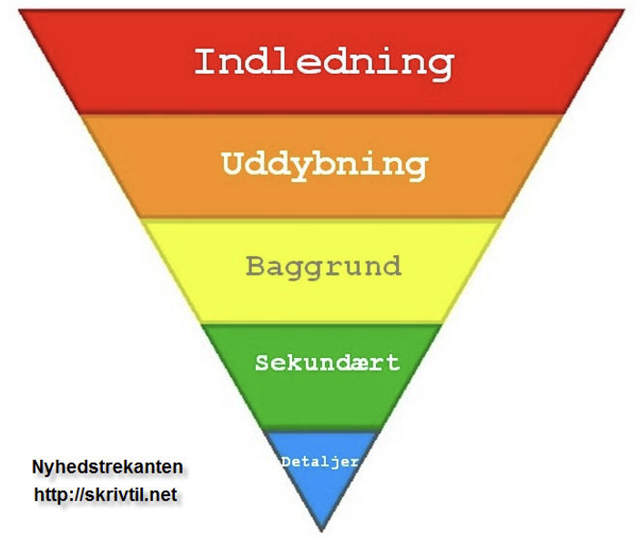

For at skabe en tekst som en læser gider bruge tid på, skal du som minimum have noget der er væsentligt,
sensationelt, identifikation, konflikt og aktualitet. Disse er alle nyhedskriterier.
Noget der har grundlæggende betydning eller konsekvens for mange mennesker
Noget der er oppe i tiden. Historien må gerne udspringe af stof som i forbejen cirkulere i andre medier.
Langt de fleste nyheder udspringer af dette kriterium
Læseren som læser teksten skal gerne kunne genkende sig selv i dette kriterium.
Læseren må gerne få tanken "det kunne være mig".
Noget der enten chokerer eller fascinere læseren. Det kan være små historier i avisen
som kan være forsidehistorien.
Når sager eller personer er på kollisionskurs.
Bruger du disse kriterier når du skaber indhold, så får du 3 ting ud af det.
kvalitet er den første ting, bedre indhold der rammer målgruppen.
Delinger, flere links og sociale delinger.
Mere trafik som følge af links.
Aida modellen bruges til fx salgsbreve, plakater, videoer og opslag til at fange modtagerens opmærksomhed.
Der er to typer der kan skabe opmærksomhed.
- Det usædvanlige (kreative layout eller indhold)
- Det behovstyrrede (jeg har brug for info).
Nyhedstrekanten bygger på indledningen, uddybning, baggrund, sekundært og detaljer.
Hvem fortæller nyheden? (Hvem, hvad, hvor, hvornår?)
Dette er information som forklare og udvider indledningen (baggrund, sekundære emner, detaljer.)
